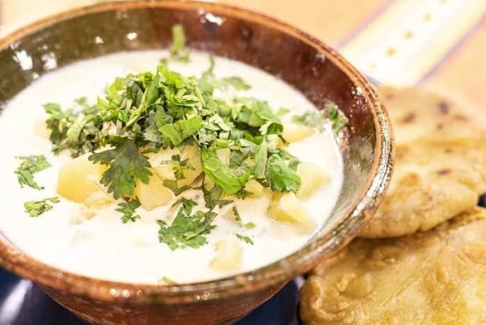

Pizca Andina

"Sopa tradicional, reconfortante y emblemática. Con su combinación de papas, queso ahumado y cilantro, es el plato ideal para brindar calor y energía en las mañanas frías de la montaña."
⏱️ Tiempo: 30 min
🔥 Calorías: 250 kcal
📊 Dificultad: Fácil
🛒 Ingredientes
Marca lo que ya tengas en casa (Para 4 personas):
👩🍳 Preparación Paso a Paso
- Preparar el fondo: En una olla profunda, coloca a calentar el caldo junto con el cebollín para que libere su sabor.
- Cocinar las papas: Cuando el caldo comience a hervir, agrega los cubos de papa y deja cocinar a fuego medio hasta que estén blandas (aprox. 15 min).
- Añadir el toque lácteo: Incorpora la leche y el queso ahumado picado. Revuelve suavemente y baja el fuego al mínimo. Ajusta la sal y pimienta.
- Escalfar los huevos: Agrega los huevos enteros uno a uno directamente en la olla. Deja cocinar sin revolver de 3 a 5 minutos, hasta que la clara esté firme.
- El servicio final: Sirve bien caliente (un huevo por comensal), espolvorea cilantro fresco y acompaña con arepas.